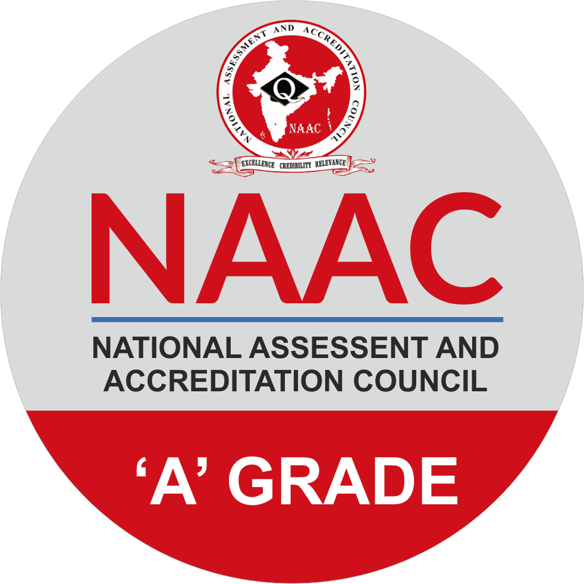
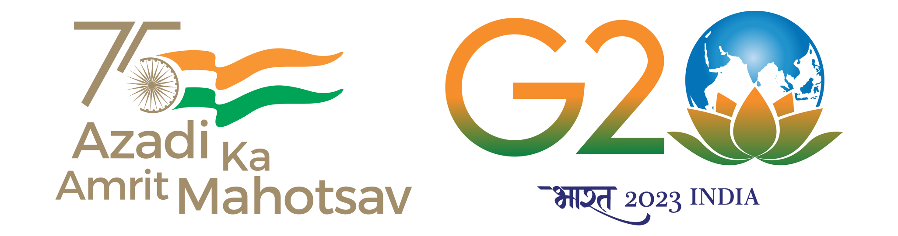

|  |  | ||||||||||||
|---|---|---|---|---|---|---|---|---|---|---|---|---|---|
| Home | Clients | Services | About | Contact | |||||||||||||
|
Product 1
Product 2 Product 3 Product 4 Product 5 |
Welcome to National Assessment and Accreditation Council (NAAC)India has one of the largest and diverse education systems in the world. Privatization, widespread expansion, increased autonomy and introduction of Programmes in new and emerging areas have improved access to higher education. At the same time, it has also led to widespread concern on the quality and relevance of the higher education. To address these concerns, the National Policy on Education (NPE, 1986) and the Programme of Action (PoA, 1992) spelt out strategic plans for the policies, advocated the establishment of an independent National accreditation agency. Consequently, the National Assessment and Accreditation Council (NAAC) was established in 1994 as an autonomous institution of the University Grants Commission (UGC) with its Head Quarter in Bengaluru. The mandate of NAAC as reflected in its vision statement is in making quality assurance an integral part of the functioning of Higher Education Institutions (HEIs). The NAAC functions through its General Council (GC) and Executive Committee (EC) comprising educational administrators, policy makers and senior academicians from a cross-section of Indian higher education system. The Chairperson of the UGC is the President of the GC of the NAAC, the Chairperson of the EC is an eminent academician nominated by the President of GC (NAAC). The Director is the academic and administrative head of NAAC and is the member-secretary of both the GC and the EC. In addition to the statutory bodies that steer its policies and core staff to support its activities NAAC is advised by the advisory and consultative committees constituted from time to time.
About NAAC. The NATIONAL ASSESSMENT AND ACCREDITATION COUNCIL (NAAC) conducts assessment and accreditation of Higher Educational Institutions (HEI) such as colleges, universities or other recognised institutions to derive an understanding of the 'Quality Status' of the institution. Notifications:
|
||||||||||||
| © 2018 NAAC. All rights reserved | Designed and developed by KELTRON | Webmaster | |||||||||||||